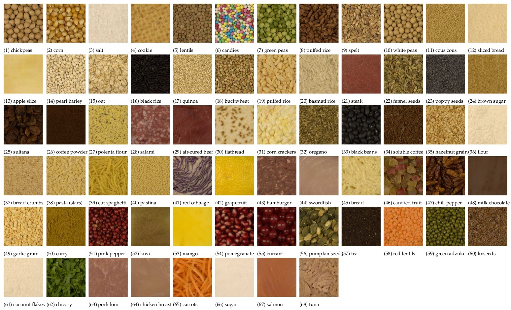
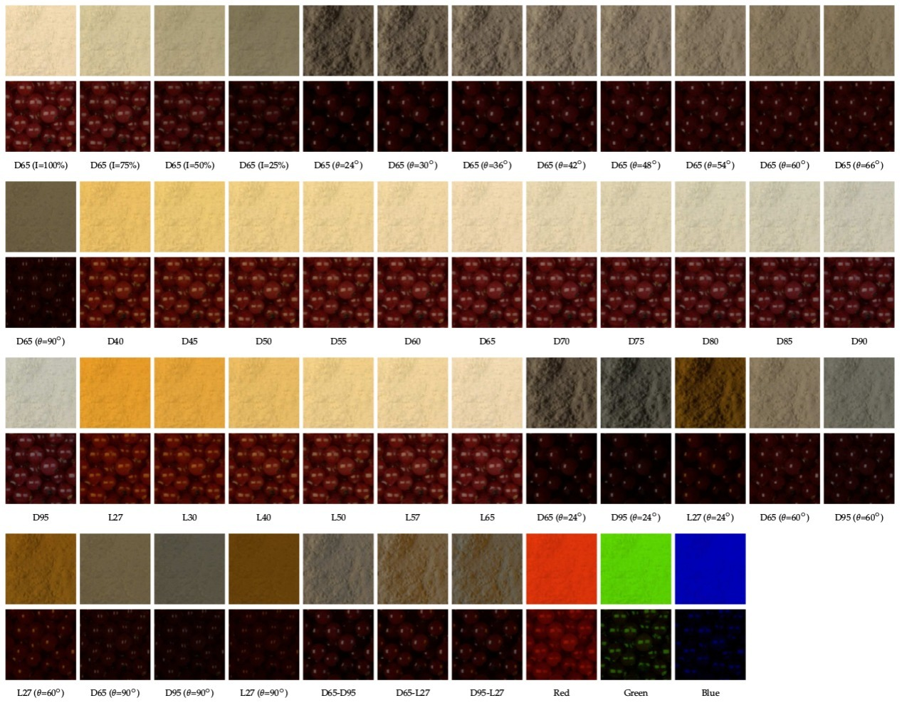

Description
The Raw Food Texture database (RawFooT) has been specially designed to investigate the robustness of descriptors and classification methods with respect to variations in the lighting conditions, with a particular focus on variations in the color of the illuminant. The database includes images of samples of textures, acquired under 46 lighting conditions which may differ in the light direction, in the illuminant color, in its intensity, or in a combination of these factors. Our classes correspond to 68 samples of raw food, including various kind of meat, fish, cereals, fruit etc: the whole database includes 68 x 46 = 3128 images.

